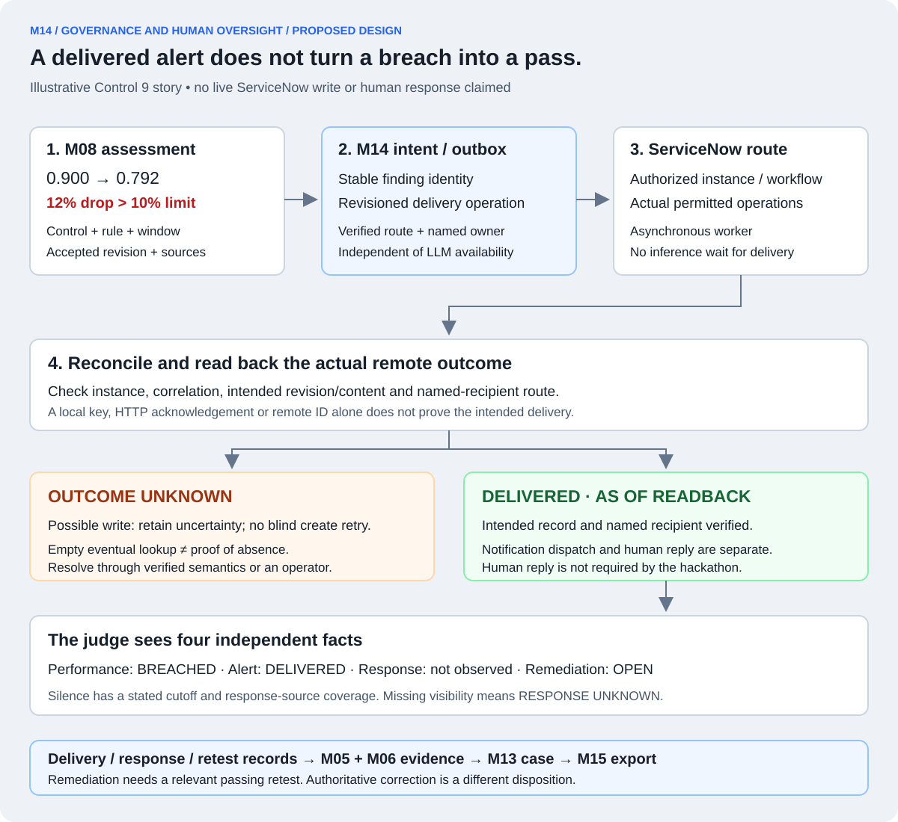

The dangerous sequence.
The worker sends create. ServiceNow may create the record. The connection drops before our worker receives the response. A second blind create can produce two findings for the same crossing.
M14 / 16 · SERVICENOW GOVERNANCE AND HUMAN OVERSIGHT
M14 takes a control-generated finding, delivers it through a permitted ServiceNow workflow, verifies what actually arrived, and records the named owner's response or observed silence. It connects technical measurement to operational responsibility.
M07–M09 determine what the control measured. M12 validates evidence and revisions. M13 shows the case. M14 connects that case to a real governance record and person; it does not recalculate the score or turn an alert into a runtime block.

| Record | What it represents | What it does not establish |
|---|---|---|
| Telecom customer incident | The customer's service problem handled by the supplied agents. | A governance finding or proof that a control alert reached an owner. |
| AICT asset / connection | A discovered or registered agent/system and the configured integration. | Access to every trace, a working finding route or tenant isolation. |
| Local alert / finding intent | An accepted control result that requires a permitted governance action. | A remote ServiceNow record or completed delivery. |
| Remote governance record | The finding/alert/task actually created through the available authorized workflow. | Human reading, successful remediation or a passing control. |
Store explicit links among them where supported. Do not assume they are the same ServiceNow table or that AICT automatically creates every relationship. The transcript requests a unique team-named connector in a shared environment. A team prefix prevents naming collisions; authorization must come from real credentials, permissions and checked record scope.
Record the exact permitted instance, authenticated identity, team connection, discovered asset IDs and allowed operations. Read back the intended assets and separately verify any run/trace link. Then verify a permitted finding/alert route and named-owner assignment. Asset discovery alone cannot pass these other checks.
The capability record states whether creation, lookup by correlation, update, conditional/versioned update, response/history reading and retest linking are actually supported. No particular table, endpoint, plugin entitlement, webhook or idempotency guarantee is assumed. A documented permitted workflow may be used if the workshop exposes it; an unavailable capability remains a stated gap needing organizer resolution.
The connector maps our stable internal contract to that verified route. It uses a configured target and field allowlist; untrusted notes or model output cannot select an instance, endpoint or recipient. Recheck current authorization before dispatch and readback. Keep credentials out of evidence bundles.
Consider a Control 9 window with frozen baseline 0.900 and measured score 0.792. M08 computes a 12% relative drop: (0.900 − 0.792) / 0.900. Under a 10% limit this is a threshold crossing. M14 receives that assessment; it does not ask an LLM whether 12 is greater than 10.
Every measured window crossing creates an idempotent alert intent, even if the declared interval allowance permits some violating windows. Interval satisfaction and the obligation to alert on an individual crossing remain separate. Missing measurement produces a monitoring-health finding only under its declared rule, not an invented drift crossing.
| Intent field group | Illustrative contents / required meaning |
|---|---|
| Logical finding identity | Authenticated team + configured target instance + Control 9 + exact specification + window identity + finding kind. Include a declared episode key only where that rule requires multiple distinct occurrences. |
| Immutable operation identity | Logical finding + accepted assessment revision + operation kind + immutable mutation revision. Bind the operation to its exact payload, configured target, recipient, routing and explanatory-content revisions. Identical retries reuse that identity and body; changed content or routing requires a new linked operation, even without a new assessment. |
| Rule and measured scope | Control 9 / AIA-ARC-006; dated specification; exact window, complete member-run references, baseline reference, 0.900 → 0.792 and 12% relative drop. |
| Evidence provenance | Assessment ID/revision, accepted-input revision, captured source references and typed evidence bindings. Preserve the exact inputs used for this result. |
| Routing and ownership | Verified permitted route, policy/routing version, actual named recipient's platform identity and validated scope. Example names are not delivery evidence. |
| Optional explanation | M11 Nemotron explanation already checked by M12, with citations and its assessment revision; the deterministic finding works without it. |
Derive or durably resolve each mutation from its initiating assessment, routing change or content revision, so repeated processing of the same cause does not invent more operations. A record can support Controls 7, 9 and 16 through separate versioned bindings. That does not make one alert satisfy three independently required actions. Track each required control/scope obligation and whether its delivery contract was fulfilled. A remote case may group findings only if the verified route preserves each finding, owner, status and evidence link.
The LLM can help explain the observed failure and cite related records. It cannot choose recipients, authorize sending, change the verdict, or close the finding. Use a fixed deterministic template if the explanation is unavailable or stale. Subsequent explanatory enrichment is a separate versioned operation, not a prerequisite for the required alert.
An outbox is a durable queue of intended external actions. Commit the accepted assessment and its required intent together in one supported transaction, or use a durable reconciliation sweep that finds every eligible assessment without an intent and inserts the missing intent idempotently. With the second approach, expose pending intent generation and sweep lag; do not claim immediate atomic creation across independent stores.
A worker claims an operation, verifies the configured route and current permissions, then attempts delivery. Record attempt identity, timestamps, intended content revision and observed outcome. Rich ServiceNow delivery remains asynchronous: agents and M13 case publication do not wait for a remote governance write. Their case shows the actual delivery state.
Dispatch eligibility also checks accepted assessment/intent validity and supersession. Condition the dispatch claim on that recorded state. A validated correction, withdrawal or declared replacement can mark a proven unclaimed obsolete operation SUPERSEDED without sending it; retain its history. An already-claimed or uncertain send may still occur and must remain reconcilable, with a linked correction/retraction as required. No physical no-send-after-invalidation guarantee is implied. A later passing window does not cancel the obligation to alert on an earlier valid crossing, and a known-invalid old breach must not be presented as current truth.
Use bounded retries and a declared retry deadline/backoff policy, honoring rate limits where reported. Retry an ambiguous write only when verified receiver idempotency or a conclusive reconciliation result makes that safe. A local unique key prevents duplicate local intents; it cannot guarantee one remote creation.
A retry budget exhausted after a known rejection is different from a possibly successful write whose response was lost. Preserve unresolved outcomes for authorized reconciliation. Do not call them definitely failed or send an unapproved message through another channel. A renewed/manual retry is recorded explicitly and never silently resets prior attempts or uncertainty.
The worker sends create. ServiceNow may create the record. The connection drops before our worker receives the response. A second blind create can produce two findings for the same crossing.
Preserve OUTCOME_UNKNOWN. Use the verified idempotency/correlation mechanism and inspect the intended remote record, including target instance, finding identity, revision and recipient. Only supported receiver semantics or conclusive resolution permit safe repeat submission.
An empty lookup in an eventually updated index does not prove that no record was created. Without a reliable reconciliation path, hold the operation unresolved for an authorized operator. Local deduplication is not an exactly-once ServiceNow guarantee.
Corrected findings create another challenge: an old request may apply after a newer request. Local worker order alone cannot prevent that. Use verified target-side version/conditional-update semantics when available. Otherwise hold later mutation while prior outcome/order is uncertain and disclose the limitation; do not claim that the remote record reflects the latest revision until its content is read back. Retain an append-only local history regardless of remote update support.
| Proposed local state | Required observation | Permitted claim |
|---|---|---|
| PENDING | Durable intent exists; no established remote outcome yet. | The alert is queued for delivery. |
| ACCEPTED_UNVERIFIED | Remote acknowledgement or ID exists, but required content/route readback is incomplete. | The platform accepted something; intended delivery is not yet verified. |
| OUTCOME_UNKNOWN | A possible write has no conclusive outcome, or conflicting delivery observations remain. | The action may have happened; reconciliation is needed. |
| DELIVERED | Authorized readback verifies the configured instance, correlation, intended revision/content and named recipient route. | The intended record and assignment are present as of that observation. |
| REJECTED / RETRY_EXHAUSTED | Reliable rejection evidence or exhausted safe-retry policy, with any residual uncertainty recorded separately. | Delivery is not established; exact reason and next permitted action are visible. |
These are our contract labels, not claimed ServiceNow status values. Store raw response/readback evidence alongside the mapping. HTTP 202, an arbitrary remote ID or a dashboard toast is insufficient. Record presence/assignment, actual notification dispatch and human response are separate observations. If the declared route requires an additional notification, verify that separately; an assigned record alone does not prove notification delivery.
Readback is revision-specific and dated. Remote edits, deletion, reassignment or later corrections create new observations; they do not erase the earlier successful delivery or prove that the original write never occurred. Delivery receipts and remote records flow back through M05/M06 with source provenance, so M13 can expose the evidence behind the status.
Resolve the named owner through an authorized identity source and the declared routing rule. “Operations team” alone is not a named individual unless the source requirement explicitly permits that form. Preserve the recipient at delivery and every observed reassignment, with who changed it, when and the supporting remote record. Group assignment does not silently become evidence that a particular person was notified.
A readback or authenticated callback can record an actual response only within its verified provenance and actor scope. A note claiming “Priya approved” is source text, not automatically Priya's authenticated approval. Correlate target record, finding/revision, event identity, authoritative actor and timestamp; deduplicate callbacks and reconcile gaps by permitted reads. M12 applies the same source-authority and validation rules as for other evidence.
For silence, report “No response observed as of [cutoff], over [covered response interval/source].” This requires adequate access and coverage of the defined response channel. A permission error, stale feed or incomplete response history yields RESPONSE_UNKNOWN, not proved silence. No response in that channel says nothing about an unobserved phone call, whether the recipient read the alert, or what they did outside the recorded workflow.
The hackathon does not require the person to answer. A delivered alert to a named owner with accurately recorded silence can demonstrate the required human-loop handoff. An acknowledgment, when present, is useful evidence; it is not a passing retest or proof that the service problem was fixed.
| Situation | Required treatment |
|---|---|
| A real breach is fixed | Link the original failure, actual remediation task/action, relevant new-run/window retest under the applicable declared rule and its passing evidence. Verify any claimed closure through the authorized workflow and retain the original breached assessment. |
| The owner acknowledges, without a passing retest | Record the response; the finding remains unresolved for our assurance claim even if a remote status was manually changed to “closed.” |
| A source correction invalidates the finding | M12 accepts the authoritative correction and issues a linked assessment revision. Record correction/withdrawal with its reason and provenance; do not pretend the system was repaired or fabricate a new-run retest. |
| Someone relaxes the threshold | Preserve the old result under its original rule. A new-policy pass does not make the original breach disappear or automatically establish remediation. |
| No human responds | Record covered silence or response uncertainty and leave unresolved work visible. Do not invent an acknowledgment to make the submission look complete. |
The provided pattern requires a passing retest to substantiate remediation closure. Any owner approval/action required by the actual permitted workflow is additional evidence when closure is claimed; it is not a universal requirement to obtain a human reply during this hackathon. A legitimate open finding is acceptable evidence of a discovered problem. The response, remediation, retest and remote closure states remain separate.
A passing retest must cover the relevant failure mechanism and declared population using a valid predeclared measurement basis. One easy run cannot stand in for a required multi-run performance window. Later baseline or evidence corrections follow M12's explicit restatement rules, preserving the original dated basis and its history.
The following sequence is illustrative, not a record of an executed test. Assume an accepted, complete Control 9 interval with ten windows, zero violating windows allowed and one window showing the 12% drop described above.
The control successfully detected and routed the failure. That is evidence that the monitoring mechanism operated; it does not mean the performance requirement was satisfied. A repeated query reuses the same logical finding rather than producing a fresh alert for the same assessment.
| ID | Component | Responsibility |
|---|---|---|
| M14.1 | Team-scoped AICT connection / asset registration | Verify actual connection/assets and separately document trace and workflow capabilities. |
| M14.2 | Permitted finding / alert route | Translate deterministic revisioned intents into the verified authorized workflow. |
| M14.3 | Delivery outbox and bounded retries | Preserve required intents, meter attempts and reconcile ambiguous writes without blind duplication. |
| M14.4 | Remote ID / status readback | Verify target, correlation, content revision and recipient; retain dated delivery evidence. |
| M14.5 | Owner and human-response tracking | Record authoritative identities, reassignments, actual responses and covered silence or uncertainty. |
| M14.6 | Remediation and passing-retest linkage | Substantiate claimed remediation closure and separately record evidence-driven corrections. |
Implement these as a small connector/worker and shared repositories, not six new services. The approved deployed worker can share the ingestion/assessment host; exact hosting depends on workshop access. A local judge tool can inspect exported records without becoming a laptop dependency in the live agent path.
Capture a real permitted team connection and asset readback; one real measured finding with its stable correlation and named recipient; the actual delivery attempt and content readback; response or covered-silence evidence; and the same links visible from M13. If remediation closure is claimed, include the original failure, action and passing relevant retest. Keep the required trace/run integration claim limited to what was separately demonstrated.
M15 should test duplicate intents, crash between assessment and intent, lost acknowledgement, eventual lookup, delayed old updates, rate limits, wrong-instance correlation, owner reassignment, spoofed response text, revoked read permission and evidence corrections. Use permitted fixtures or isolated tests for fault injection and label them accordingly. Do not perturb the shared environment without authorization.
Generated investigator prose and our own finding text are derived artifacts, not independent corroboration of the original breach. Retain that provenance when the connector reads them back, avoid recursive alerts on its own delivery events, and bind delivery evidence to Control 9 operation or any separately declared Control 7 recording obligation.
This walkthrough defines the implementation and acceptance contract. It does not verify workshop access, platform delivery, a human response or a completed control. Actual completed controls remain 0/3.
INDEPENDENT AI REVIEWS
The reviewers examine the actual chapter against the supplied workshop requirements and existing contracts. Their work is an independent AI design review, not platform certification or an integration test.
Final verdict: ACCEPT from all three independent AI reviewers. Source/governance review required no changes. Delivery and identity reviews required mutation-specific operation identity; delivery review also required a validity/supersession check before dispatch. Both corrections were verified. No remaining material findings in the reviewed scope. No live AICT connection, ServiceNow write, notification, human response, remediation or retest was performed.
NEXT · M15
M15 owns the validation campaign, actual pass/breach cases, model evaluation, timing measurements, offline recheck and the six required deliverables.